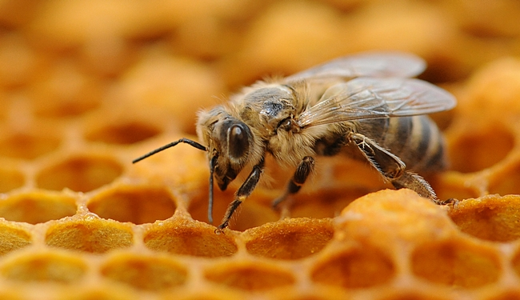

Honey Bee Hive

A honey bee hive can consist of Drones, Queen, Workers. There is only one queen, a small percentage of drones, and 60,000 worker bees. The population of the bee hive greatly varies depending on many factors. The hives consist of hexagons. Hexagons are the best shape because they minimize wax usage and maximize honey storage. The hive's temperature stays at a constant of 30 to 35 degrees celsius.
Honey Bee Drone
The Drones are male Honey Bees. These bees' only purpose in life is to mate with the queen. The Drones do not collect pollen nor do they have stingers. One of the more tragic bees. The drone, after mating, dies immediately after mating with the queen. The drones are also the first to be kicked out, during winter or when the colony's food supply is running low.
Honey Bee Queen
The Honey Bee Queen is a bee. The Queen is the biggest bee in the hive and is the only bee in the hive to lay eggs. The Queen's most notable feature is her abdomen. She lays about 2,000+ eggs, every day, but depending on the circumstances, the number might be different. A Honey Bee Queen is born as a female larva, just like the worker bees in the hive. The larva when fed with exclusively royal jelly, then the larva can become a queen. But the path to being a queen isn't so easy! When the queen has emerged, she must fight the other queens in the colony, to take out any rivals. Under the Queen's rule, she can release chemicals, that guides the bee's behavior. A queen bee will live for 5 years.
Honey Bee Worker
Worker Bees are females bees. But unlike the queen, the worker bee cannot reproduce. They're the most common bee. There are up to 60,000 worker bees in one hive. Worker bees do a lot of things like feeding the queen and larva; guard the hive; find and forage pollen and nectar; build the hive; circulate air in the hive, etc. Worker bees if threatened will sting, but once they sting, they're dead. During the worker bee's lifetime, they will produce 1/12 of a teaspoon of honey. Although the worker bee cannot reproduce, they can still lay unfertilized eggs. These eggs eventually give birth to drones. Worker bees will live for about 6 weeks. Worker bees are born larva, but when fed with a diet of royal jelly and other stuff, the larva develops into a worker bee.